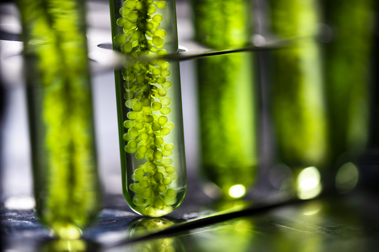

La biotecnología médica es aquella que emplea el uso de células vivas y otros elementos celulares, para lograr mejoras en la salud de las personas. Entre los principales usos que se aplican en la biotecnología médica, destacan su empleo para la cura de algunas enfermedades, comprender la biología celular humana, entre otras.
Básicamente se usa para la creación de productos farmacéuticos que contribuyan a la cura de algunas enfermedades o en su tratamiento. Sin embargo, todo ello, previo a un estudio de las células, bacterias, entre otros. Un ejemplo clave de ello, son las vacunas, antibióticos, entre otros elementos.
La biotecnología agrícola es aquella que se emplea para la mejora de cultivos y plantas. En general se centra en el desarrollo e investigación de las plantas genéticamente modificadas, con la finalidad de mejorar sus características, haciéndolas resistentes a las plantas, el clima, las plagas, entre otras. Esto contribuye a la mejora de los cultivos y a la creación de una agricultura sostenible; con el incremento en cultivos y a la reducción de elementos contaminantes.
La biotecnología industrial es aquella que contribuye a la creación de elementos industriales y al reemplazo de otros, por unos menos contaminantes. Básicamente consiste en la producción de nuevos elementos usados a nivel de industria, como el alcohol, detergentes, entre otros. En donde además de reemplazar a los ya existentes, mejoran su aplicación, logrando que sean amigables con el medio ambiente. Reduciendo así sus efectos en la contaminación ambiental.